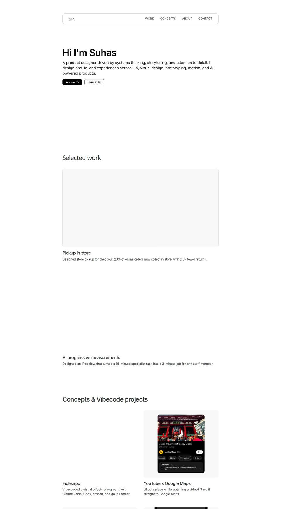
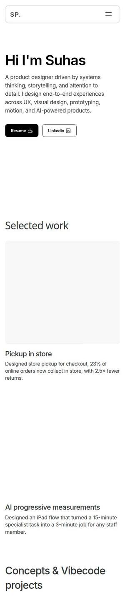
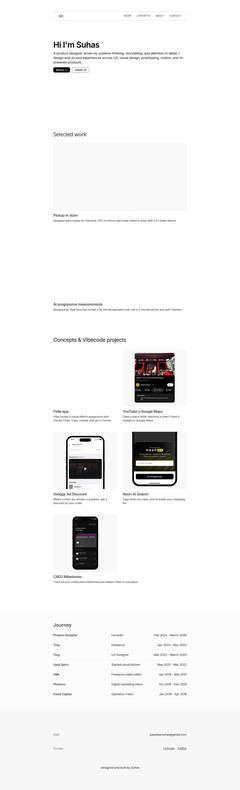
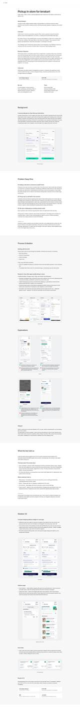
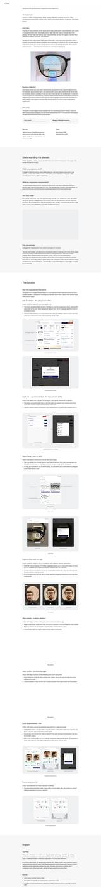

🌶 Spice level
Mild, Medium or Saoji motion. Mild is recruiter mode and the default when the OS asks for reduced motion. It tells the cloud-kitchen story and doubles as accessibility.
Effort S–MAny direction
An audit of your live Framer site, about 100 searches on 2026 trends and hiring, references worth stealing from, three concept directions you can try below, and a full site structure. The written version with every source lives in the repo under research/.
The Spice level control in the top bar works on this page too. Saoji is a fiery Nagpur cuisine with 30+ spices; you can also type “saoji” anywhere.
Read directly from the published Framer project “Suhas Portfolio” (no unpublished changes). Screens below are canvas captures; the hero's ASCII background and the video tiles don't render in canvas captures, which is also roughly what a visitor on slow mobile data sees before the videos load.





/old-home still public, a framer.website subdomain.The brief says fun and engaging. The people who hire you skim. Every idea on this board passes through these numbers.
llms.txt for AI screeners.AI made polished, template-shaped design free, so 2026 rewards what AI can't fake: specificity, personality, imperfection, craft and play. Canva called it “Imperfect by Design”, Landor “Anti-AI Crafting”, and Kittl ranked Naive Design #1.
Each one is grounded in something only you can claim. The demos are rough sketches of the signature interaction, built so you can feel the idea before choosing it.
A former film editor presents his product work the way an editor would: as cuts, test screenings and box-office numbers.
Your BOPIS story already has this shape: rough cut (V1) → test screening (10% of users, −10% conversion) → audience feedback (user calls) → re-edit (V2) → box office (23 in 100, 2.5× fewer returns).
J K L are the real editor shortcuts for back, pause and play.
The designer behind Lenskart's store-pickup checkout presents himself as a well-designed product page. Every interaction is a commerce UX work sample.
Precedent: Philippe Dubost's Amazon-page CV (2013) drew about 1.5M visits and got him hired within months. Tone reference: Teenage Engineering, playful and premium rather than Amazon-cluttered.
Home delivery = email · Pickup = a 20-minute call
This is the staged order card from your own BOPIS case study, reused as a contact confirmation.
A top-down desk of real objects from your work and life. Pick one up to open its story, or tidy the desk into a neat index.
Rides two 2026 trends: trinket or catalogue design (objects as identity) and blueprint design (annotated spec sheets suit “systems thinking”).
Weighted for your brief (fun, engaging, stand out immediately): uniqueness ×2, fun ×1.5, 10-second clarity ×1.5, the rest ×1. Scores 1–5; for gimmick risk, 5 means low risk.
| Criterion | Weight | A · Cut | B · Checkout | C · Desk |
|---|---|---|---|---|
| Only-you uniqueness | ×2 | 5 | 3.5 | 3 |
| Fun and replay value | ×1.5 | 5 | 4 | 5 |
| 10-second clarity | ×1.5 | 4 | 5 | 3 |
| Relevance to roles you'll apply for | ×1 | 4 | 4 | 3 |
| Mobile quality | ×1 | 4.5 | 5 | 2 |
| Build effort (5 = easiest) | ×1 | 3 | 4 | 2 |
| Low gimmick risk | ×1 | 4 | 3 | 3 |
| Weighted total | 39 | 36.5 | 28 |
Scroll the table sideways to compare all three.
Recommendation: A, Director's Cut. It's the most only-you idea, it gives your case studies a structure that's easier to follow, it suits your taste for visual effects, and it works on phones as reels. B is a close second and wins if you weight clarity and launch speed higher, or if you're targeting commerce roles. Keep C's best mechanic (“tidy up”) as a small moment rather than the whole site. Whichever you pick, don't mix metaphors; re-skin borrowed mechanics in the chosen language.
One signature interaction people talk about, a few supporting micro-interactions, and easter eggs for the curious. Everything skippable, nothing blocking the 10-second pitch.
Mild, Medium or Saoji motion. Mild is recruiter mode and the default when the OS asks for reduced motion. It tells the cloud-kitchen story and doubles as accessibility.
Two depths for every case study. Fixes the 55-second problem and the “too dense” red flag in a way that feels intentional.
Toggle the BOPIS cart between V1 and V2 and watch ₹2000 become ₹1950. Align a pupil marker with and without the zoom loupe. The strongest proof you can show.
The project index as an edit: drag the playhead, J K L to move, Space to play. Never hijacks page scroll.
Real collaborators from each project roll like film credits, followed by a post-credits scene. Warm, humble, memorable.
Jump anywhere, copy your email in one click, and give AI screeners a clean summary of you (Brian Lovin's site already publishes one).
Written for Director's Cut; the skeleton is the same for every direction, only the labels change. Wireframes, copy drafts and the content checklist are in research/07-site-structure.md.
Redirect /bopis and /progressive-measurements to the new paths; retire /old-home.
Mapped from your Pickup in store case study.
Full-height sections with native vertical scroll-snap and a bottom CTA bar in thumb reach.
Gathered through search; this environment couldn't open the sites themselves, so click through and judge them with your own eyes. The full list (with Framer components that prototype each direction) is in research/04-references.md.
Framer gets you live fastest. Code in this repo gives you full control and a strong “designer who builds” signal. Details, stack and budgets are in research/08-build-plan.md.
Load time under 2s on a mid-range Android on 4G, no preloader, under 120 KB of JavaScript on first load, hero video under 1.5 MB with a poster frame, reduced motion by default when asked, everything keyboard-operable, AA contrast, sound off by default.
Direction, platform, target roles and market.
Rewrite both case studies as cuts; hero copy; ask for 3 quotes.
Type, colour grades, grain, motion tokens; hi-fi home and case study.
All pages, mobile reels, preview deploys.
Timeline, motion control, two playable slices, credits, ⌘K, eggs.
Performance and a11y pass, meta, llms.txt, domain, 5-second tests.
These decide the next step.